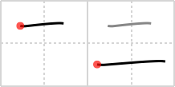

二
← →
two

Reading:
On-Yomi: ニ、ジ — Kun-Yomi: ふた、ふた.つ、ふたた.び
Heisig story:
Like the Roman numeral II, which reduplicates the numeral I, the kanji for two is a simple reduplication of the horizontal stroke that means one. The order of writing goes from above to below, with the first stroke slightly shorter.
Koohii stories:
1) [kiisu] 15-1-2008(54): Two lines.
2) [mazel] 10-9-2006(24): Roman numeral II, written on its side.
3) [FuDaWei] 20-8-2009(22): No wonder the hotel room only cost TWO yen, all it had was a ceiling and a floor.
4) [findus] 11-12-2007(14): With this one, I have doubled the number of kanjis I know. Next please ;).
5) [sakurasan] 27-4-2008(7): 1+1 = 2.